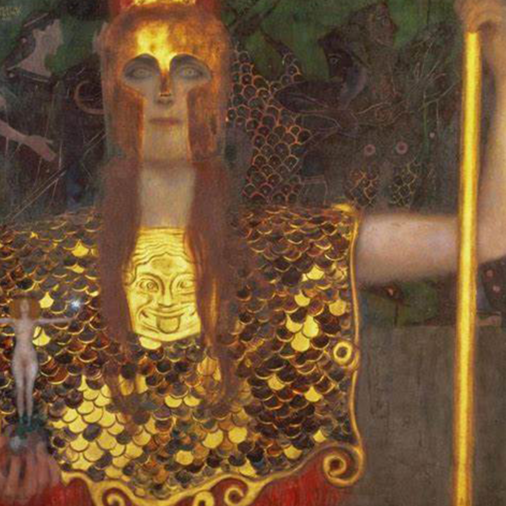
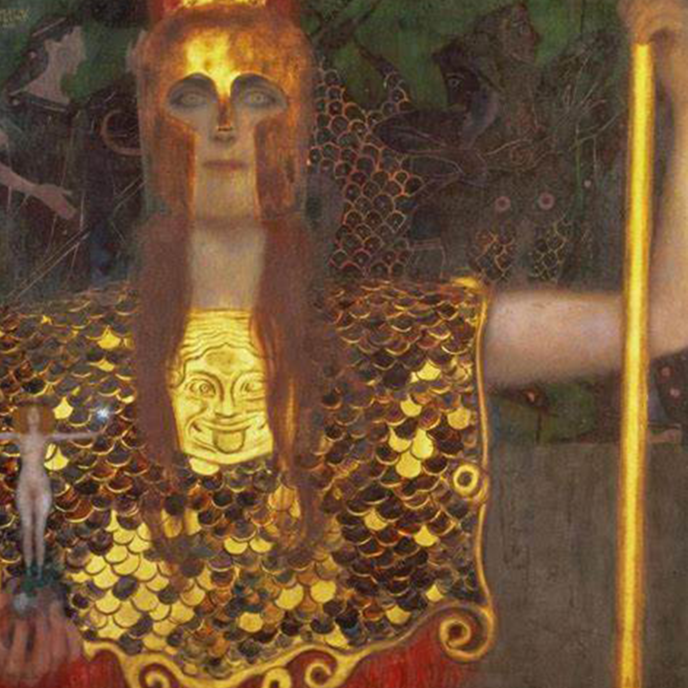

Gustav Klimt
Gustav Klimt venne ammesso alla scuola d’arte e mestieri d’Austria, dove cominciò ad avvicinarsi al mondo dell’arte ed a padroneggiare gli strumenti del mestiere.
Il talento del giovane artista non passò inosservato.
La figura di Klimt pittore cominciò ad avere un successo sempre maggiore, e ciò lo portò ad avere delle richieste di lavoro sempre maggiori.
Klimt insieme ad un’altra ventina di artisti, di varie correnti artistiche, diedero vita alla secessione viennese.
Con la creazione di questo gruppo avevano come obiettivo, l’esportazione dell’arte al di fuori del mondo accademico, in tutte le sue forme.

 
